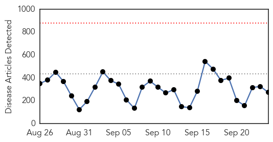

30 Day Trends
Web: 0 alerts, 0 warnings
Twitter: 0 alerts, 0 warnings
Top Articles:
- 1.000
- 21,000 Ebola Cases By November If No Changes
- 1.000
- Luck has kept Ebola out of the U.S. But that’s very likely to change.
- 1.000
- Is Ebola Pandemic Coming to America?
- 1.000
- Dutch doctor suffering from malaria, not Ebola
- 1.000
- VIDEO: Sierra Leone considers repeating Ebola shutdown
- 1.000
- Ebola may infect 1.4 million by mid-January, CDC warns : LIFE : Tech Times
- 1.000
- Kenya : Ebola's murderous path from a toddler to global mayhem
- 1.000
- Over 1 million quarantined in Sierra Leone
- 1.000
- How prepared is U.S. for Ebola?
- 1.000
- Red Cross team attacked while burying Ebola dead
- 1.000
- U.S. warns that Ebola could infect 1.4 million
- 1.000
- Lessons learned 6 months into worst Ebola outbreak
- 1.000
- 10 things you should know about Ebola
- 1.000
- Dutch doctor feared to have Ebola has malaria: official
- 1.000
- Ebola's murderous path from a toddler to global mayhem
- 1.000
- Ebola epidemic more deadly than all previous combined, report says
- 1.000
- No more patients under Ebola surveillance in Nigeria: official
- 1.000
- DRC sees drop in Ebola cases - Africa
- 1.000
- Ebola outbreak: Red Cross workers attacked while burying dead bodies in Guinea
- 1.000
- Ebola -- A Fragile Health Care System's Ripple Effects
- 1.000
- Will Canada Do More To Help Combat Ebola?
- 1.000
- Ebola could infect 1.4 million by end of January, CDC says
- 1.000
- Why This Ebola Epidemic Won’t Become the ‘Black Death’ of the 21st Century
- 1.000
- DR Congo Ebola outbreak almost over
- 1.000
- Ebola, Cholera: The Epidemiology of Anti-Blackness and the “White Savior Industrial Complex”- Black Lives Don’t Matter
- 1.000
- Ebola vaccine ready by end of year?
- 1.000
- Dutch doctor feared to have Ebola has malaria: official
- 1.000
- An epidemic of plague and pestilence takes hold across the world
- 1.000
- Sierra Leone: 130 confirmed cases of Ebola found during lockdown
- 1.000
- WHO offers profile of Ebola epidemic and its lessons
- 1.000
- WHO, CDC sketch varying Ebola projections
- 1.000
- Ebola Outbreak Could Hit 1.4 Million People by January if Not Contained, CDC Warns
- 1.000
- US warns that Ebola could infect 1.4 million
- 1.000
- Ebola fear: 'Having a small fever makes you very afraid'
- 1.000
- Ebola-hit nations may 'face collapse'
- 1.000
- Ebola outlook grim as study predicts 21,000 cases by November
- 1.000
- Ebola outbreak: your questions answered - Liberia
- 1.000
- Mauritania calls for access to vaccines to fight Ebola crisis in West Africa - Xinhua
- 1.000
- US Ebola cases could hit 1 4 million by mid Jan
- 1.000
- US: Ebola cases could hit 1.4 million by mid-Jan.
- 1.000
- US warns that Ebola could infect 1.4 million
- 1.000
- Stephen Cornish: Canada can help defeat Ebola
- 1.000
- Ebola death rates 70%
- 1.000
- CDC: Ebola could infect 1.4 million by end of January
- 1.000
- CDC study offers sharply differing forecasts for Ebola
- 0.999
- Doctor calls for blood donations to treat Liberian Ebola victims
- 0.999
- Doctor calls for blood donations to treat Liberian Ebola victims
- 0.999
- Portage Woman Helps Fight Ebola
- 0.999
- Red Cross team attacked in Guinea, as fear, misunderstandings stymie efforts to stop Ebola
- 0.999
- Stephen Cornish: Canada, world, must do more to fight Ebola
Showing top 50 articles...
Top Tweets:
- 0.957
- RT: Ebola's lost ward: Hospital in Sierra Leone struggles to continue research amid the worst Ebola outbreak in history http:/…
- 0.870
- .@T_Inglesby introducing our panel for today's West African Ebola outbreak event. EbolaOnTheHill
- 0.829
- RT: NIH fights Ebola with vaccine and treatments. Phase 1 trial of ebola vaccine started. If successful phase 2 planned for Novemb…
- 0.783
- Fair: Ebola has set the public health infrastructure of Sierra Leone Liberia and Guinea back by 5-6 years. EbolaOnTheHill
- 0.534
- .@AndyWeberNCB The USG's Global Health Security Agenda is intended Prevent Detect & Respond to emerging ID like Ebola. EbolaOnTheHill
- 0.532
- .@AndyWeberNCB- Ebola is a national security issue human crisis and health emergency like we've not seen before. EbolaOnTheHill
- 0.524
- RT: Now Senate re Ebola : "I have never seen a public health situation with this much need for urgency" Lik…
Web/News Articles
Tweets

Article Locations

Article Confidences